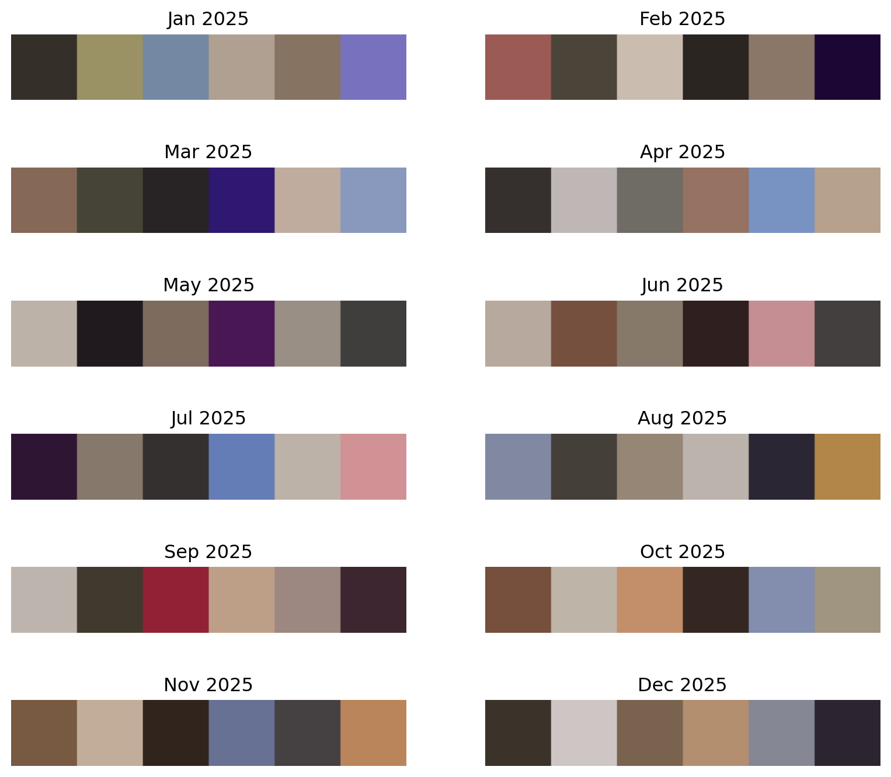

import osxphotos
from PIL import Image as PILImage
import datetime as dt
import numpy as np
import pandas as pd
from colorthief import ColorThief
import math
import matplotlib.pyplot as plt
from sklearn.cluster import KMeans
from skimage import color
import plotly.graph_objects as go
import osIntroduction
While learning about classification machine learning methods during my time in UCSB’s MEDS program, an idea formed in my head that relates colors and the photos I take. If I can extract the colors from each individual photo in my library, it would be cool to see a vibrant color palette which represents my entire camera roll.
To get started, these are the libraries used in this project.
osxphotos Python Library
First, we extract our photos into a Python object. The photos I take from my phone are synced to my photos on my computer through iCloud and are stored in a special path on MacOS systems. The osxphotos library was used to access this path on my computer and store all my photos and their metadata into a special osxphotos object, essentially a large list with each entry being one photo.
# Retrive photos library from system path
photosdb = osxphotos.PhotosDB()
# Begin Jan 1, 2024
start = dt.datetime(2024, 1, 1)
# End Mar 31, 2026
end = dt.datetime(2026, 3, 31)
# Extract photo items, restrict dates
photos = photosdb.photos(from_date=start, to_date=end)Filtering
Now that there’s a list of all my photos, I want to only include photos that my camera has taken. As part of the metadata for each photo, there are boolean tags indicating the type of media (screenshots, videos, etc). We can write a simple function that will be applied to every photo in our list and return it or not based on the media type.
Exclude:
- Screenshots
- Videos
- Saved pictures from online
Code
def photo_filter(photo):
# Exclude screenshots
if photo.screenshot:
return False
# Exclude movies
if photo.ismovie:
return False
# Exclude saved photos
if photo.exif_info.aperture is None:
return False
return TrueSince the photos object is a list, a simple for loop can apply the filtering function.
photos_filtered = [p for p in photos if photo_filter(p)]As of now, photos aren’t sorted by date.
for photo in photos_filtered[:5]:
print(f'Date: {photo.date}')Sorting
photos_sorted = sorted(photos_filtered, key=lambda p: p.date)
# Check sort
for photo in photos_sorted[:5]:
print(f'Date: {photo.date}')Color Extracting
Now that our photos are sorted, we can start extracting colors! The Python library colortheif will be used for the extracting and can return the RBG values of a photo’s dominant color. To test this, I pick four photos with obvious dominant colors to make sure the extracted color is accurate.
Photos:
- June 12, 2024, Hydrangea (green/purple)
- March 15, 2025, Illenium concert (purple-ish)
- December 12, 2025, Maks beach (blue)
- December 21, 2025, Japan fall colors (orange)
To streamline picking out singular photos, I write another function that greatly reduces the amount of photos to go through when looking for one.
Code
def photo_pick(photolist, date_str, photo_position = None, exact = False):
datetime = dt.datetime.strptime(date_str, "%Y-%m-%d")
year_input = datetime.year
month_input = datetime.month
day_input = datetime.day
if exact:
photo_day = [p for p in photolist if ((p.date.year == year_input) & (p.date.month == month_input) & (p.date.day == day_input))]
photo_exact = photo_day[photo_position - 1]
return photo_exact
else:
photo_day = [p for p in photolist if ((p.date.year == year_input) & (p.date.month == month_input) & (p.date.day == day_input))]
return photo_dayjun12 = photo_pick(photos_sorted, "2024-6-12", exact=False)
photo1 = photo_pick(photos_sorted, "2024-6-12", photo_position=23, exact=True)
mar15 = photo_pick(photos_sorted, "2025-3-15", exact=False)
photo2 = photo_pick(photos_sorted, "2025-3-15", photo_position=6, exact=True)
dec12 = photo_pick(photos_sorted, "2025-12-12", exact=False)
photo3 = photo_pick(photos_sorted, "2025-12-12", photo_position=5, exact=True)
dec21 = photo_pick(photos_sorted, "2025-12-21", exact=False)
photo4 = photo_pick(photos_sorted, "2025-12-21", photo_position=3, exact=True)test_photos = [photo1, photo2, photo3, photo4]Code
def get_color(image_path):
ct = ColorThief(image_path)
return ct.get_color()
def display_photo_colors(photolist, figsize):
# Initialize valid photo empty list
valid_photos = []
valid_idx = []
valid_colors = []
# Initialize photo error count
err_count = 0
# Iterate through photos
for i, photo in enumerate(photolist):
try:
valid_photos.append((photo.path, PILImage.open(photo.path)))
valid_idx.append(i)
except Exception:
err_count += 1
# Plot valid photos
cols = 2
rows = len(valid_photos)
fig, axes = plt.subplots(rows, cols, figsize=figsize)
axes = axes.flatten()
for i, (path, img) in enumerate(valid_photos):
# Photo row
axes[i * 2].imshow(img)
axes[i * 2].axis('off')
axes[i * 2].set_title(f'#{valid_idx[i]}')
# Color swatch row
color = get_color(path)
valid_colors.append(color)
swatch = PILImage.new("RGB", (50, 50), color)
axes[i * 2 + 1].imshow(swatch)
axes[i * 2 + 1].set_title(f'RGB: {valid_colors[i]}')
axes[i * 2 + 1].axis('off')
for ax in axes[len(valid_photos):]:
ax.axis('off')
print(f'Error in {err_count} photos.')display_photo_colors(test_photos, figsize=(6,10))This looks good! The extracted colors seem to be accurate and we can continue this on bigger photo lists.
K-means Palette Generation
While thinking about how to “aggregate” colors, I thought the K-means clustering algorithm could be useful. If I can plot my colors onto a 2-D plane, we can set an amount of clusters such that the centroid of each cluster will be the aggregate color. I’ll show an example plot later to show what this looks like.
Code
def extract_colors(photolist):
# Initialize valid photo empty list
valid_photos = []
valid_colors = []
# Initialize photo error count
err_count = 0
# Iterate through photos
for photo in photolist:
try:
valid_photos.append((photo.path, PILImage.open(photo.path)))
except Exception:
err_count += 1
for i, (path, img) in enumerate(valid_photos):
# Color swatch row
color = get_color(path)
valid_colors.append(color)
return valid_colorsFirst, I’ll choose a month to test the color aggregation on.
photos_feb26 = [p for p in photos_sorted if ((p.date.year == 2026) & p.date.month == 2)]feb_colors = extract_colors(photos_feb26)One thing worth mentioning before utilizing K-means Clustering is the format our color data is extracted into. In the function above, we return valid_colors, basically a list of RGB values for the dominant color of each photo. The RGB color format doesn’t quite work for our purposes for a couple reasons. Instead, we convert RGB values to LAB format which are more suited for the algorithm.
Code
def aggregate_palette(rgb_colors, n=6, plot=False):
arr = np.array(rgb_colors, dtype=float) / 255.0
lab = color.rgb2lab(arr.reshape(-1, 1, 3)).reshape(-1, 3)
km = KMeans(n_clusters=n, random_state=42, n_init=10)
km.fit(lab)
# Convert centroids back to RGB
centroids_lab = km.cluster_centers_.reshape(-1, 1, 3)
centroids_rgb = (color.lab2rgb(centroids_lab).reshape(-1, 3) * 255).astype(int)
if plot:
point_colors = arr[np.arange(len(arr))] # original RGB (0-1) for scatter color
centroid_colors = color.lab2rgb(centroids_lab).reshape(-1, 3)
fig, ax = plt.subplots(figsize=(9, 7))
# Normalize L* (0–100) to a reasonable point size range
L = lab[:, 0]
sizes = ((L / 100) * 80) + 10 # maps L* to ~10–90px
# Plot all points, colored by their actual RGB value
ax.scatter(
lab[:, 1], lab[:, 2], s=sizes, # a, b, L axes
c=point_colors, alpha=0.8, label='colors'
)
# Plot centroids as large stars
centers = km.cluster_centers_
L_c = centers[:, 0]
sizes_c = ((L_c / 100) * 300) + 50
ax.scatter(
centers[:, 1], centers[:, 2], s=sizes_c,
c=centroid_colors, marker='*',
edgecolors='black', linewidths=0.2, label='centroids'
)
ax.set_xlabel('a* (green–red)')
ax.set_ylabel('b* (blue–yellow)')
ax.set_title(f'LAB color space — {n} clusters')
ax.legend()
return [tuple(c) for c in centroids_rgb]feb_palette = aggregate_palette(feb_colors, n=6, plot=True)Here we see the clustering algorithm in action. I chose 6 clusters for this set of photos. Using a similar method as before, we can go through color of each centroid and display a color swatch.
fig, ax = plt.subplots(1, 1)
swatch = PILImage.new("RGB", (300, 50))
for i, c in enumerate(feb_palette):
swatch.paste(PILImage.new("RGB", (50, 50), c), (i * 50, 0))
ax.imshow(swatch)
ax.axis('off')
ax.set_title("Feb. 2026 Aggregated Palette")
plt.show()Iterating Through All 2025 Months
fig, axes = plt.subplots(6, 2, figsize=(10, 9))
months = ['Jan', 'Feb', 'Mar', 'Apr', 'May', 'Jun', 'Jul', 'Aug', 'Sep', 'Oct', 'Nov', 'Dec']
for i, mo in enumerate(months):
photos_monthly = [p for p in photos_sorted if (p.date.year == 2025) & (p.date.month == i + 1)]
colors_monthly = extract_colors(photos_monthly)
palette_monthly = aggregate_palette(colors_monthly, n=6, plot=False)
swatch = PILImage.new("RGB", (300, 50))
for j, c in enumerate(palette_monthly):
swatch.paste(PILImage.new("RGB", (50, 50), c), (j * 50, 0))
row, col = i // 2, i % 2
axes[row, col].imshow(swatch)
axes[row, col].axis('off')
axes[row, col].set_title(f'{mo} 2025')
plt.show()
All Photo Colors in 3D Space
# long run time
# all_colors = extract_colors(photos_sorted)
# save to csv instead & load in
all_colors = pd.read_csv("all_colors.csv")
all_colors_arr = all_colors[['r', 'g', 'b']].values# convert to RGB 0-1
arr_n = np.array(all_colors_arr, dtype = float) / 255.0lab = color.rgb2lab(arr_n)l_star = lab[:, 0]
a_star = lab[:, 1]
b_star = lab[:, 2]
point_colors = arr_n[np.arange(len(arr_n))]fig = go.Figure(data=[go.Scatter3d(
x=a_star, y=b_star, z=l_star,
mode='markers',
marker=dict(color=point_colors, size=2)
)])
fig.update_layout(scene=dict(
xaxis_title="a* (green-red)",
yaxis_title="b* (blue-yellow)",
zaxis_title="L* lightness"
))
fig.show()